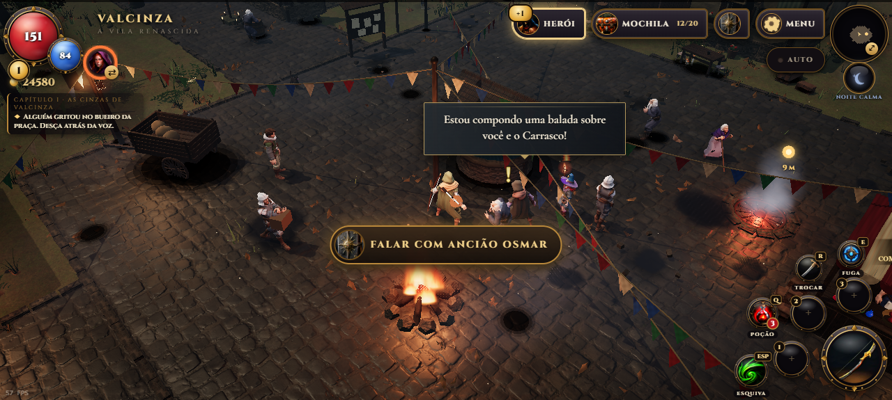
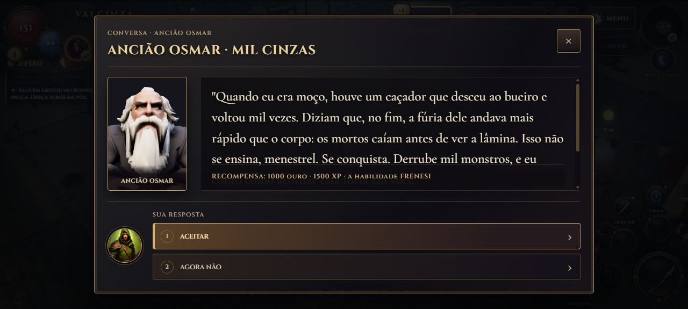
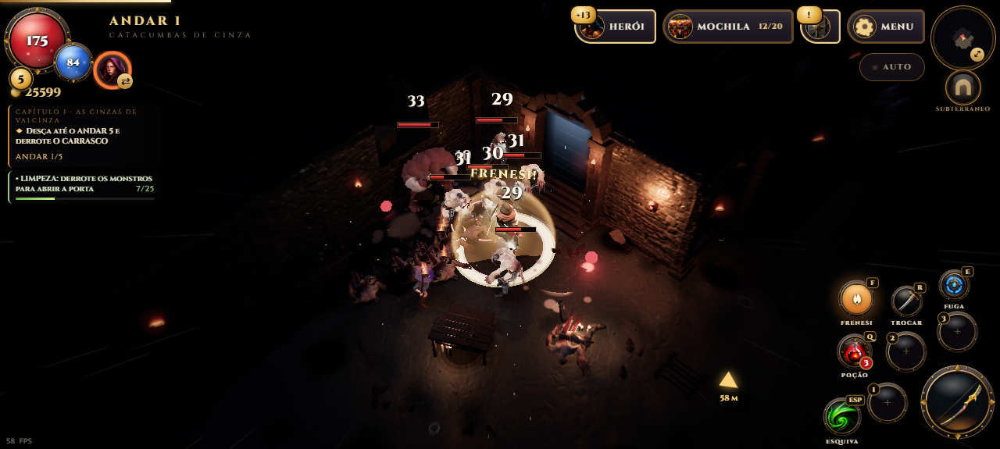
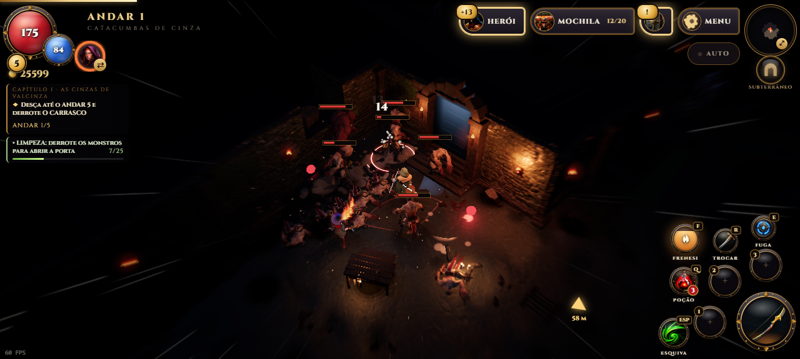

O medidor da 1.10.3 enchia a cada acerto e deixava a luta fácil demais. Agora o Frenesi é uma habilidade de verdade: conquistada, carregada e solta na hora certa.
Mil Cinzas
O Ancião Osmar espera junto do poço da praça de Valcinza. Ele conta de um caçador que desceu ao bueiro mil vezes e pede que você derrote mil monstros, em qualquer lugar. A recompensa é a habilidade FRENESI, além de 1000 de ouro e 1500 XP.

O Ancião Osmar, ao lado do poço da praça.

A missão MIL CINZAS.
Encha, depois solte
Conquistado, o botão FRENESI aparece ao lado de TROCAR (tecla F no computador). Ele enche abatendo monstros: uns 33 comuns, enquanto elites e chefes contam bem mais. Os abates da Lia também valem, e a carga fica guardada entre os andares.
Cheio, solte: um estouro em volta do herói fere, empurra e atordoa quem está perto, com meio segundo de câmera lenta.

O estouro ao soltar o Frenesi.
Doze segundos de fúria
Por 12 segundos, Menestrel e Lia andam e atacam 35% mais rápido e causam 25% a mais de dano. A tela corre nas bordas como antes, e a esquiva deixa o rastro dourado.

Em frenesi: o mundo corre nas bordas.
Prefere que ele saia sozinho? Menu → Opções → FRENESI: AUTOMÁTICO (com o AUTO ligado também). Ele é solto quando há dois ou mais monstros perto, ou um elite ou chefe. A opção EFEITOS DE VELOCIDADE desliga só o visual.